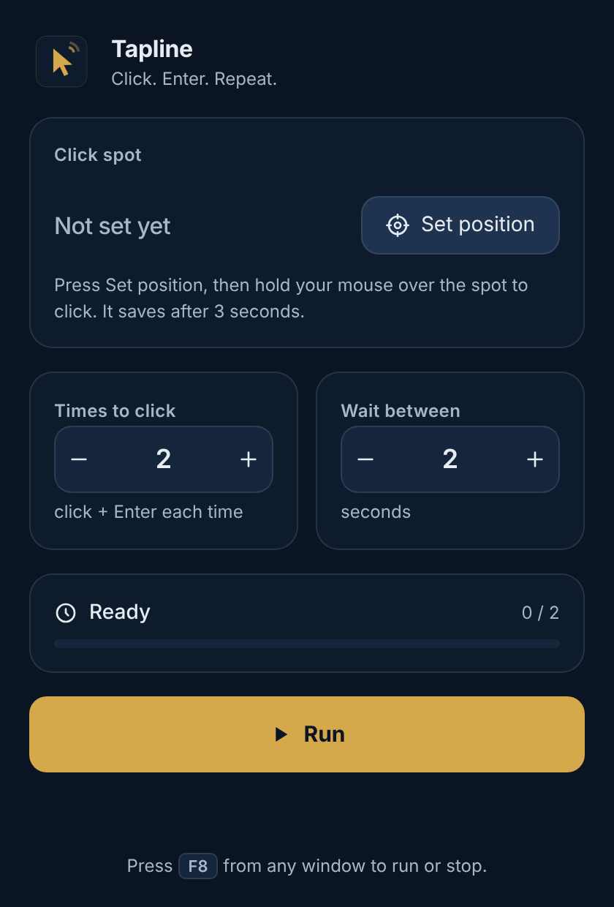

Tapline clicks the spot you choose, presses Enter, waits, and does it again as many times as you set. One key starts it, the same key stops it.
Free. About 5 MB. Windows 10 and 11, macOS 11 or later.

Press Set position and hold your mouse over the button you want clicked. Tapline remembers it.
Set how many times to click and how long to wait between each one, from zero to ten minutes.
Tapline clicks, presses Enter, waits and repeats. Press F8 again, or Stop, to end it early.